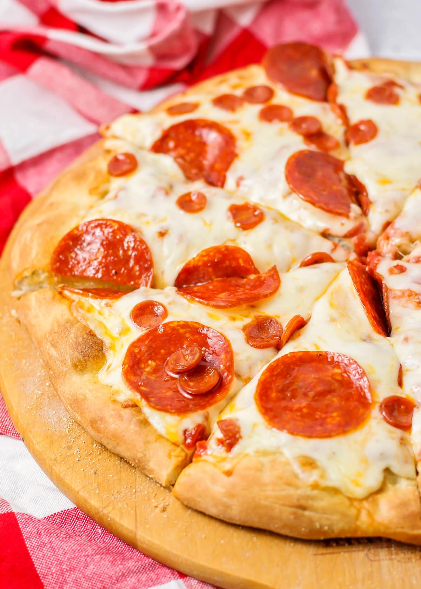

Pepperoni Pizza

What is Pepperoni Pizza?
Pepperoni pizza is an American cheese pizza that is topped with pepperoni.
Ingredients
For the Pizza Dough:
-
1 cup warm water (between 105 and 110 degrees Fahrenheit)
-
2 teaspoons sugar
-
2 1/4 teaspoons active dry yeast
-
3 cups all-purpose flour
-
2 tablespoons olive oil
-
2 teaspoons salt
For the Tomato Sauce:
-
1 can (15 ounces) crushed tomatoes
-
1 clove garlic, minced
-
1 teaspoon sugar
-
1 teaspoon dried oregano
-
Salt and pepper to taste
For the topping:
-
2 cups shredded mozzarella cheese
-
1/2 cup sliced pepperoni
-
2 tablespoons olive oil (for brushing)
-
1/2 teaspoon garlic powder
-
1/2 teaspoon dried oregano
Steps to cook
-
Prepare the Dough: Combine the warm water and sugar in a bowl. Stir until sugar is dissolved. Sprinkle the yeast
over the water and let it sit for 5 minutes until it becomes foamy.
-
In a large bowl, combine the flour and salt. Make a well in the middle and pour in the yeast mixture and olive
oil. Stir with a spoon or your hands until a dough starts to form.
-
Transfer the dough to a floured surface and knead for about 10 minutes, until the dough is smooth and elastic.
You can also use a stand mixer with a dough hook for this step.
-
Place the dough in a greased bowl, cover with a cloth, and let it rise in a warm place for about 1-2 hours, or
until it doubles in size.
-
Prepare the Sauce: While the dough is rising, you can make the sauce. In a saucepan, combine the crushed
tomatoes, minced garlic, sugar, and dried oregano. Season with salt and pepper. Simmer over low heat for 15-20
minutes, stirring occasionally. Set aside to cool.
-
Assemble the Pizza: Preheat your oven to its highest setting, typically around 500-550 degrees Fahrenheit. If
you have a pizza stone, place it in the oven while preheating.
-
Once the dough has risen, punch it down to release the air. Transfer it to a floured surface. Roll out the dough
into your desired size, keeping in mind it should fit on your pizza stone or baking sheet.
-
If you're using a pizza stone, transfer the rolled-out dough onto a piece of parchment paper. If you're using a
baking sheet, you can just place the dough directly onto it.
-
Spread a layer of the prepared tomato sauce over the dough, leaving a small border for the crust. Sprinkle the
shredded mozzarella evenly over the sauce, and arrange the pepperoni slices over the cheese.
-
Bake the Pizza: Carefully transfer the pizza (and parchment paper, if using) onto your preheated pizza stone, or
place your baking sheet in the oven. Bake for about 10-15 minutes, or until the crust is golden and the cheese
is bubbling and starting to brown.
-
While the pizza is baking, combine the olive oil, garlic powder, and dried oregano in a small bowl. Once the
pizza is done, brush this mixture over the crust.
-
Remove the pizza from the oven and let it cool for a few minutes before slicing and serving. Enjoy your homemade
pepperoni pizza!